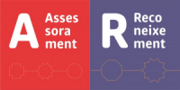
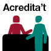
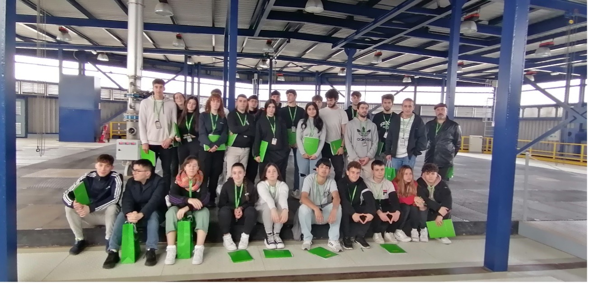
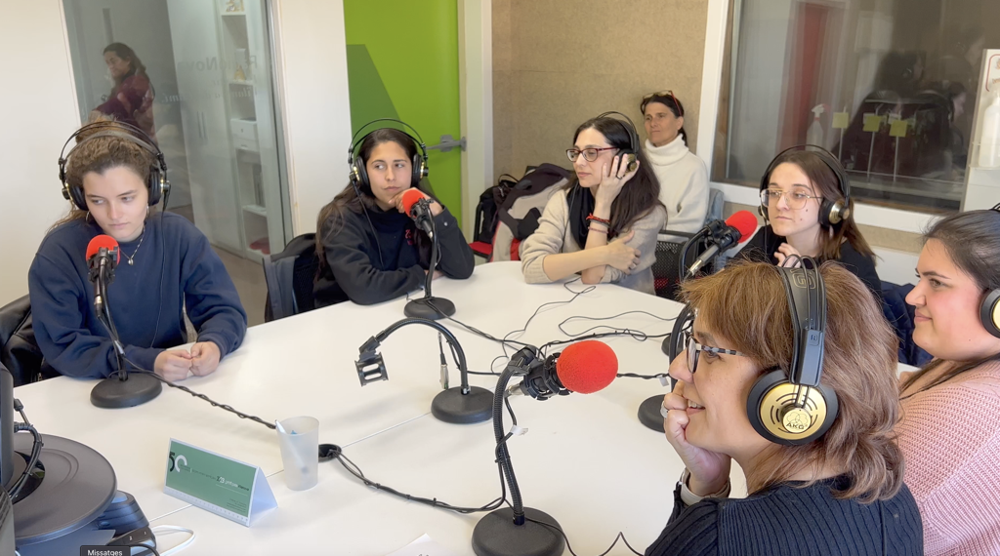
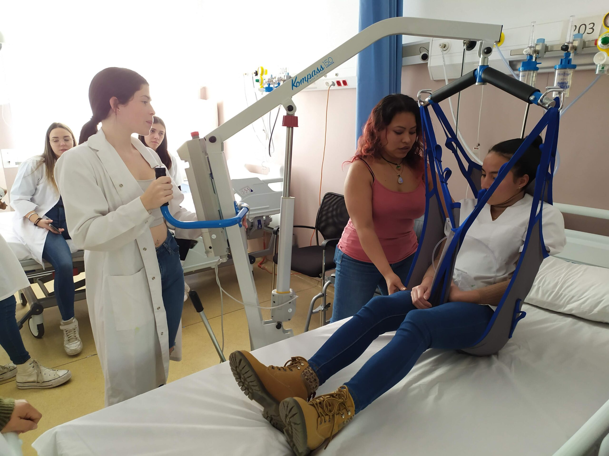
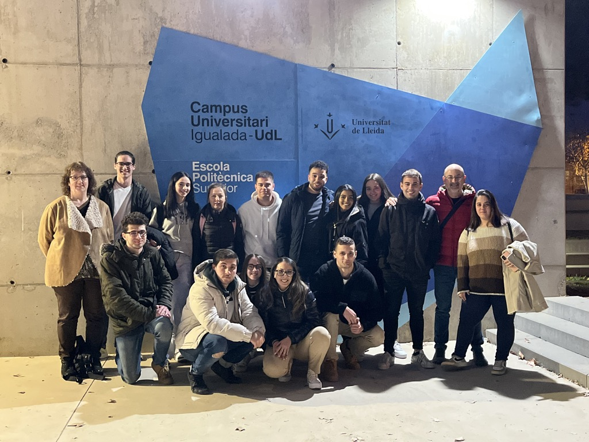
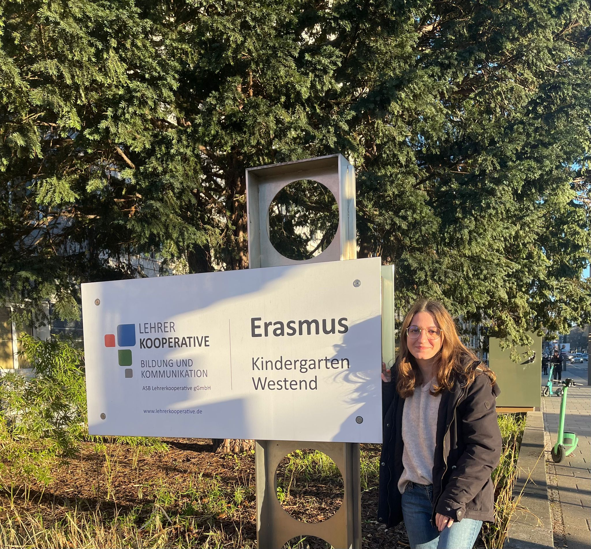
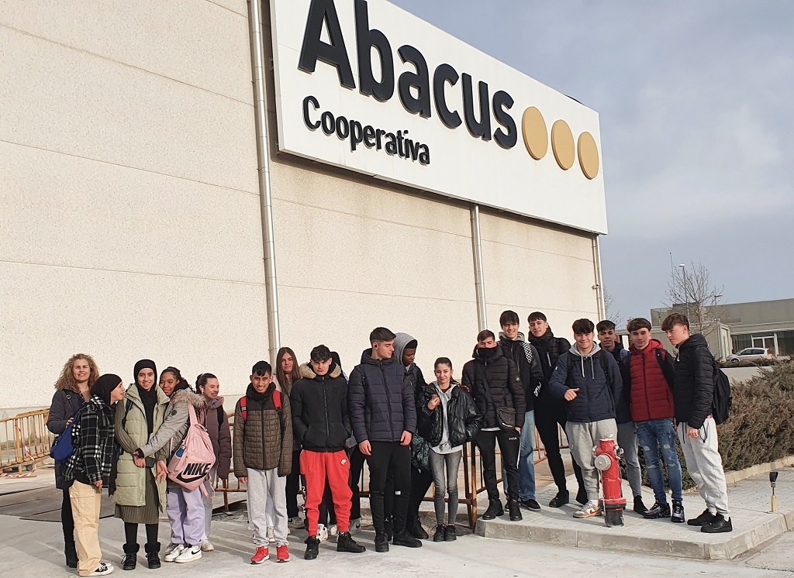
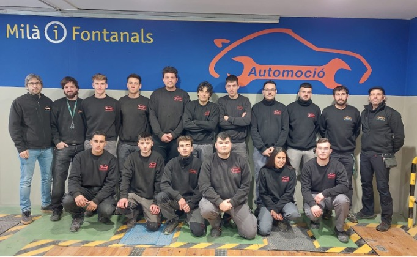
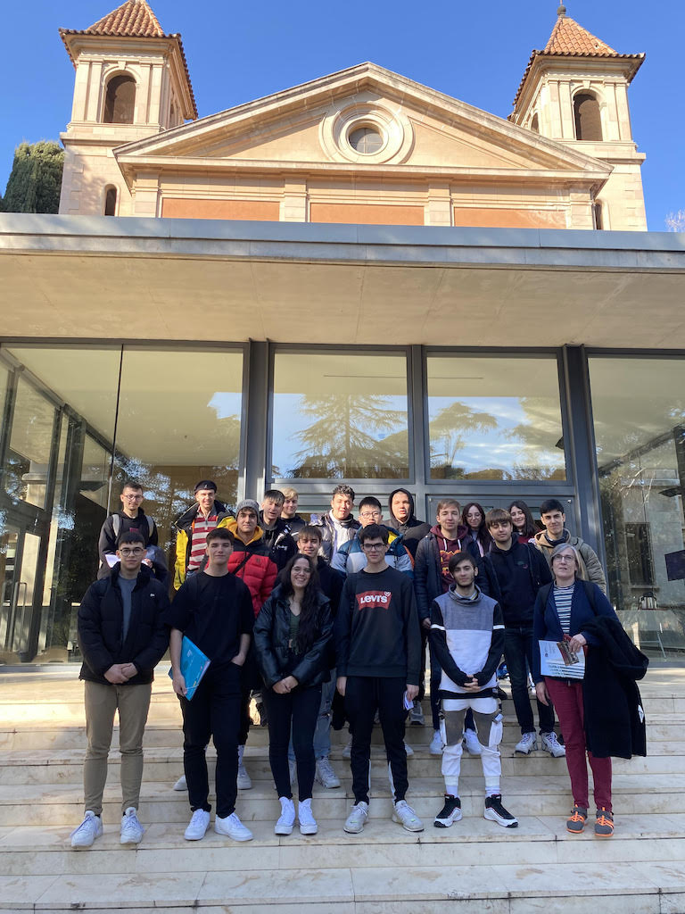

{kind=link}
Els alumnes de 1r i de 2n de batxillerat de l’INS Milà i Fontanals, anaren dijous 9 de març a visitar la central nuclear de Vandellòs I, i el conjunt monumental de Centcelles a Constantí, i Tarragona.
10/03/23
Els alumnes de 1r i de 2n de batxillerat de l’INS
Milà i Fontanals, anaren dijous 9 de març a visitar la central nuclear
de Vandellòs I, i el conjunt monumental de Centcelles a Constantí, i
Tarragona.
A Vandellòs visitaren l’estructura de la central (es troba… Llegeix més»
Projecte mentoria, els cicles formatius industrials i la dona.
08/03/23
Avui dia 8 de març, Dia Internacional de la Dona, hem presentat el projecte de mentoria del nostre centre. Volem donar a conèixer les nostres alumnes que estan obrint camí a professions amb poca presència femenina i crear xarxa que aculli i acompanyi a les … Llegeix més»
Dia mundial de la dona
08/03/23El grup de 2n d’integració social celebra el dia mundial de la dona amb l’exposició “Mil(à) i una dones“; una mostra de 23 dones que pretén visibilitzar i reivindicar la figura femenina en diverses disciplines. Animem al professorat i alumnat que busqui i trobi aquestes dones i es faci un… Llegeix més»
BEQUES MOBILITAT Erasmus+ Irlanda i Lituània per alumnat de Comerç Internacional
08/03/23L’INS Milà i Fontanals, dins el projecte 2021-1-ES01-KA131-HED-000012790 del programa Erasmus+ i en col·laboració amb el projecte Sefed (de la Fundació Inform), convoca 5 beques de mobilitat per a realitzar la formació en centres de treball a l’estranger durant un període de 2 mesos. Aquestes… Llegeix més»
BECA MOBILITAT IRLANDA [Alumnat AGB0]
27/02/23L’INS Milà i Fontanals, dins el projecte 2021-1-ES01-KA131-HED-000012790 del programa Erasmus+ i en col·laboració amb el projecte Sefed (de la Fundació Inform), convoca 1 beca de mobilitat per a realitzar la formació en centres de treball a l’estranger durant un període de dos mesos. Aquestes… Llegeix més»
BECA MOBILITAT SANTARÉM 2022-23 [Professorat AEA0]
27/02/23L’INS Milà i Fontanals, dins el projecte
2020-1-ES01-KA103-079352 del programa Erasmus+, convoca 2 beques de
mobilitat per realitzar un període d’aprenentatge per observació durant 5
dies a l’estranger. Aquesta observació es durà a terme durant la
setmana del 27 al 31 de març de 2023.
El… Llegeix més»
BECA MOBILITAT SANTARÉM 2022-23 [Professorat IC10]
27/02/23L’INS Milà i Fontanals, dins el projecte
2022-1-ES01-KA121-VET-000059906 del programa Erasmus+, convoca 1 beca de
mobilitat per realitzar un període d’aprenentatge per observació durant
5 dies a l’estranger. Aquesta observació es durà a terme durant la
setmana del 27 al 31 de març de 2023.
El… Llegeix més»
Visita al 4Dhealth dels alumnes de TCAI
24/02/23
Els alumnes que cursen el CFGM de Cures Auxiliars d’Infermeria, en els seus respectius torns de matí i tarda, van assistir a dos tallers pràctics al centre de simulació 4Dhealth. Un dels tallers, impartit per l’infermer de l’Hospital de Bellvitge, Joan Esteban, donava una àmplia… Llegeix més»
Els alumnes de 2n de Comerç Internacional fem una classe pràctica a la Duana del Port de Barcelona
24/02/23A primera hora del matí, ens vam trobar a l’Edifici de la Duana on una responsable de la Duana del Port de Barcelona (Agència tributària) ens va explicar com es duen a terme les inspeccions de mercaderies que s’importen i com comproven si una mercaderia… Llegeix més»
L’alumnat de 2n d’administració i finances visita el Campus d’Igualada de la UdL
24/02/23
El passat dimarts 21 de febrer, i dintre del
programa de xerrades “Buscant el nord” que organitza l’Ajuntament
d’Igualada, un grup d’alumnes de 2n d’Administració i Finances va fer
una sortida al campus universitari del Pla de la Massa de la UdL.
Des de l’inici de… Llegeix més»
EL MILÀ I FONTANALS A FRANKFURT AMB ERASMUS+
23/02/23
Des del passat 3 de febrer la nostra alumna del cicle d’educació infantil, Maribel Pérez Rubio, està realitzant unes pràctiques durant dos mesos en una llar d’infants, el Kindergarten Westend, a la ciutat de Frankfurt i que és gestionada per la Lehrer Kooperative de la… Llegeix més»
Visita a la Fageda Cooperativa
22/02/23El passat 2 de febrer els alumnes de Farmàcia i
parafarmàcia, Activitats físiques i esportives, Operacions de laboratori
i Activitats comercials, van visitar la fàbrica la Fageda cooperativa.
En la visita ens van explicar els inicis de l’empresa, tots els projectes que estan portant a terme,… Llegeix més»
Els alumnes d’Activitats Comercials visitem el magatzem logístic d’Abacus
21/02/23
Els alumnes de 1r d’Activitats Comercials, hem fet una classe al magatzem logístic que la cooperativa Abacus té a Vilanova del Camí. Hem pogut veure l’activitat d’un magatzem que ha anat creixent fins a fer grans inversions i ha automatitzat part de les seves instal·lacions… Llegeix més»
L’ Electrocat FP arriba al Milà i Fontanals
21/02/23
L’institut Milà i Fontanals s’adhereix recentment al projecte Electro FP
Aquest curs, els alumnes i professors d’automoció del centre Milà i
Fontanals, han aconseguit adherir-se al projecte de crear un Kart
elèctric per competir a l’Electrocat FP. Es tracta d’un prestigiós
projecte que consisteix a fer… Llegeix més»
Avenços cientifico-tècnics i superordinadors, una relació prometedora
13/02/23
l passat 26 de gener els alumnes de 2n curs del cicle formatiu de grau mitjà de Sistemes Microinformàtics i Xarxes (SMX), van visitar les instal·lacions del superordinador Mare Nostrum 4 ubicades a l’emblemàtica capella de Torre Girona, a Barcelona. Però té els dies comptats!… Llegeix més»